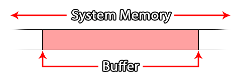

GameMaker Studio 2 tiene una serie de funciones en GML para tratar con los buffers. La mayoría de la gente debería estar familiarizada con este término, ya que se usa todo el tiempo cuando se trata de computadoras y programación, pero conocer la palabra no significa que realmente sepas lo que significa. Así que esta página pretende explicar qué es un búfer y cómo usarlos en el contexto de la programación de GameMaker Studio 2, aunque la forma general en que funcionan es la misma sin importar el idioma o la tecnología, que es una de las razones por las que son muy importante.
Un búfer (en programación) es básicamente un espacio dentro de la memoria del sistema que se usa para almacenar pequeños paquetes de datos para casi cualquier cosa (por ejemplo, transferencia de datos, colisiones, datos de color, etc.). Como se almacena en la memoria del sistema, es muy rápido de acceder, y generalmente se usaría un búfer para almacenamiento a muy corto plazo, como recibir información de red antes de procesarla o almacenar un punto de control en su juego (esto se explica en el ejemplo dado más abajo en la página).  Los búferes se crean asignando un espacio en la memoria del sistema, calculado en bytes, que luego se reserva para su juego siempre que su juego esté en ejecución o hasta que elimine el búfer utilizando la función apropiada. Esto significa que incluso cuando su juego no está enfocado (por ejemplo, en un dispositivo móvil cuando toma una llamada, el juego se pondrá en segundo plano), el búfer seguirá existiendo; sin embargo, si el juego se cierra o se reinicia, buffer se perderá.NOTA: ¡ Reiniciar el juego no borrará o eliminará el búfer! Pero evitará que se habrá perdido cualquier nuevo acceso a la memoria intermedia creada anteriormente como el mango Identificación, causando una pérdida de memoria, que se colgará su juego con el tiempo. Por lo tanto, cuando reinicie un juego, recuerde eliminar primero el búfer.
GameMaker Studio 2 permite la creación de cuatro tipos de buffer diferentes. La razón de esto es que los almacenamientos intermedios están diseñados para ser un medio de almacenamiento temporal altamente optimizado y, como tal, debe crear un almacenamiento intermedio que sea apropiado para el tipo de datos que desea almacenar; de lo contrario, podría obtener errores o causar un cuello de botella en tu código Antes de explicar esto más a fondo, veamos los cuatro tipos de búfer disponibles (definidos como constantes en GML):
Constante descripción buffer_fixed
Un búfer de un tamaño fijo en bytes. El tamaño se establece cuando se crea el búfer y no se puede cambiar de nuevo.buffer_grow
Un búfer que crecerá dinámicamente a medida que se agreguen datos. Usted lo crea con un tamaño inicial (que debe ser una aproximación del tamaño de los datos que se espera almacenar), y luego se expandirá para aceptar más datos que desborden este tamaño inicial.buffer_wrap
Un búfer donde se envolverán los datos. Cuando los datos que se agregan alcanzan el límite del tamaño del búfer, la sobrescritura se volverá a colocar al inicio del búfer, y la escritura continuará desde ese punto.buffer_fast
Este es un búfer especial "reducido" que es extremadamente rápido para leer / escribir. Sin embargo, solo se puede usar con buffer_u8 tipos de datos, y deben estar alineados a 1 byte. (La información sobre los tipos de datos y la alineación de bytes se puede encontrar más abajo en esta página).
Esos son los tipos de búfer disponibles para usted cuando usa GameMaker Studio 2, y el que elija dependerá en gran medida del uso que desee darle. Por ejemplo, un buffer de crecimiento se usaría para almacenar una "instantánea" de datos para crear un juego de salvar ya que no se conoce la cantidad real de datos que se colocarán en él, o se usaría un búfer rápido cuando sepa que los valores con los que está trabajando están todos entre 0 y 255 o -128 y 127, por ejemplo al procesar datos RGB de una imagen.Al crear un búfer, siempre debe intentar crearlo en un tamaño que sea apropiado para el tipo, con la regla general de que debe crearse para acomodar el tamaño máximo de datos que debe almacenar y, en caso de duda, use un buffer de crecimiento para evitar errores de sobrescritura.
El código real para crear un búfer se vería así:player_buffer = buffer_create(16384, buffer_fixed, 2);
Eso crearía un búfer fijo de 16384 bytes y un byte alineado a 2, con la función que devuelve un valor único de identificación que se almacena en una variable para referencia posterior de este búfer. Ahora tenemos el concepto básico de un búfer explicado que debe aprender sobre los tipos de datos y la alineación de bytes antes mencionados.
Cuando lee y escribe datos en un búfer, lo hace en '' fragmentos '' de datos definidos por su '' 'tipo de datos' ''. El '' 'tipo de datos' '' establece el número de bytes asignados dentro del búfer para el valor que se está escribiendo, y es esencial que lo haga de otra forma, de lo contrario obtendrá resultados muy extraños (o incluso errores) para su código.
Los búferes se escriben (y leen) de forma secuencial, ya que una parte de los datos se escribe después de otra, y cada elemento de datos es de un tipo establecido. Esto significa que lo ideal es que esté al tanto de los datos que está escribiendo en el búfer en todo momento. Estos tipos de datos se definen en GML mediante las siguientes constantes:
Tipo de datos constante Bytes Descripción buffer_u8 1
Un entero sin signo de 8 bits. Este es un valor positivo de 0 a 255.buffer_s8 1
Un entero de 8 bits con signo. Este puede ser un valor positivo o negativo de -128 a 127 (0 se clasifica como positivo).buffer_u16 2
Un entero sin signo de 16 bits. Este es un valor positivo de 0 - 65,535.buffer_s16 2
Un entero firmado de 16 bits. Este puede ser un valor positivo o negativo de -32,768 a 32,767 (0 se clasifica como positivo).buffer_u32 4
Un entero sin signo de 32 bits. Este es un valor positivo de 0 a 4.294.967.295.buffer_s32 4
Un entero firmado de 32 bits. Este puede ser un valor positivo o negativo de -2,147,483,648 a 2,147,483,647 (0 se clasifica como positivo).buffer_f16 2
Un número de coma flotante de 16 bits. Esto puede ser un valor positivo o negativo dentro del rango de +/- 65504. (¡Actualmente no es compatible!)buffer_f32 4
Un número de coma flotante de 32 bits. Este puede ser un valor positivo o negativo dentro del rango de +/- 16777216.buffer_f64 8
Un número de punto flotante de 64 bits. Este puede ser un valor positivo o negativo de - (2 52 ) a 2 52 - 1.buffer_bool 1
Un valor booleano. Solo puede ser 1 o 0 ( true o false )buffer_string N / A
Esta es una cadena terminada en nulo UTF-8 (0x00). Básicamente, una secuencia de GameMaker se descarga en el búfer y se pone un 0 al final.
Entonces, digamos que ha creado un búfer y desea escribir información en él, entonces usaría algo como el siguiente código:buffer_write(buff, buffer_bool, global.Sound);
buffer_write(buff, buffer_bool, global.Music);
buffer_write(buff, buffer_s16, obj_Player.x);
buffer_write(buff, buffer_s16, obj_Player.y);
buffer_write(buff, buffer_string, global.Player_Name);
mirando el ejemplo anterior, puede ver que puede escribir diferentes tipos de datos en un búfer (solo está limitado a un tipo de datos específico cuando utiliza el tipo de búfer rápido ), y estos datos se agregarán al búfer de forma consecutiva (aunque su la posición real en el búfer dependerá de su alineación de bytes, que se explica a continuación). Esto es lo mismo para leer información del búfer, y en el caso del ejemplo anterior, leería del búfer en el mismo orden en que escribió los datos, buscando el mismo tipo de datos, por ejemplo:global.Sound = buffer_read(buff, buffer_bool);
global.Music = buffer_read(buff, buffer_bool);
obj_Player.x = buffer_read(buff, buffer_s16);
obj_Player.y = buffer_read(buff, buffer_s16);
global.Player_Name = buffer_read(buff, buffer_string);
Como puede ver, lee la información en el mismo orden en que la lee en el búfer. Para obtener más información sobre cómo agregar y eliminar datos del búfer, consulte la sección de ejemplos a continuación.
Si ha estado leyendo esta página, habrá visto referencias a la alineación de bytes de un búfer. Esto básicamente se refiere a la posición en la que se almacenarán los nuevos datos dentro de un buffer determinado. ¿Como funciona esto? Bueno, para un búfer alineado con un solo byte, cada dato se escribe en el búfer de forma secuencial, y cada nueva pieza de datos se agrega directamente después de la anterior. Sin embargo, un búfer alineado con 2 bytes escribirá cada fragmento de datos en intervalos de 2 bytes, por lo que incluso si su escritura inicial es de 1 byte de datos, la siguiente escritura se moverá para alinearse a dos bytes.Entonces, si su alineación de bytes está configurada en, digamos, 4 bytes y usted escribe una sola pieza de datos que tiene un tamaño de 1 byte, haga una indicación de búfer (un contador obtiene la posición actual para leer / escribir para el búfer), usted obtendrá un desplazamiento de 1 (el desplazamiento en este caso es el número de bytes desde el inicio del búfer hasta la posición de lectura / escritura actual).
Sin embargo, si escribe otro dato, también 1 byte de tamaño, luego realice un buffer buffer, obtendrá un desplazamiento de 5 bytes (aunque solo haya escrito 2 bytes de datos) ya que la alineación ha rellenado los datos para alinearlo con la alineación del búfer de 4 bytes.
Básicamente, lo que esto significa es que la alineación solo afectará el lugar en el que se escriben las cosas, por lo que si haces un buffer dices después de escribir algo, devolverá la posición de escritura actual que sigue inmediatamente a los datos que has escrito previamente. Sin embargo, tenga en cuenta que si luego escribe otro dato, internamente el búfer moverá la posición de escritura junto con el siguiente múltiplo del tamaño de alineación antes de escribir realmente la información.
A continuación puede encontrar algunos ejemplos de usos comunes para los buffers.
Un simple ejemplo de cómo se puede usar un buffer en cualquier juego de GameMaker Studio 2 para cualquier plataforma, es la función game_save_buffer. Esta función tomará una "instantánea" del estado del juego actual y lo guardará en un búfer predefinido, que luego podrá leer para cargar el juego en ese punto nuevamente.NOTA: Esta función es muy limitada y está diseñada para que el principiante pueda poner en marcha rápidamente un sistema de punto de control, pero los usuarios más avanzados pueden preferir codificar su propio sistema utilizando las funciones de archivo, debido a que el juego no se guardará. cualquiera de los recursos dinámicos que puede crear en tiempo de ejecución como estructuras de datos, superficies, fondos agregados y sprites, etc.
Lo primero que debemos hacer es crear un nuevo objeto para controlar el guardado y la carga, por lo que debería crear uno y darle un evento de creación. En este caso, puede colocar el siguiente código:SaveBuffer = buffer_create(1024, buffer_grow, 1);
StateSaved = false;
La primera línea crea un buffer de crecimiento (ya que no conocemos el tamaño final de los datos guardados) de 1024 bytes y alineado a 1 byte. Luego se crea una variable para verificar y ver si el juego se ha guardado o no (esto se usará para cargar).
A continuación, agregamos un evento Keypress (por ejemplo) en el que guardaremos el estado actual del juego en el búfer creado:StateSaved = true;
buffer_seek(SaveBuffer, buffer_seek_start, 0);
game_save_buffer(SaveBuffer);
Lo anterior primero establecerá la variable de control en verdadero (para que esto se guarde cuando guardamos el juego en el búfer) y luego buscará el inicio del búfer antes de escribir el estado de salvar actual en él. ¿Por qué usamos buffer_seek ? Bueno, como se menciona en la sección anterior Tipos de datos del búfer, lee y escribe en un búfer desde la última posición en que se le agregaron los datos. Esto significa que si no se establece el buffer diga de nuevo al comienzo y luego cuando se guarda se le añade los datos en el búfer en el búfer en la posición de lectura / escritura, por lo que utilizar la función buffer_seek para mover el tell al inicio del buffer.
Ahora hemos guardado el estado actual del juego en un buffer. El siguiente paso sería codificar cómo cargarlo, probablemente en otro evento Keypress:if StateSaved
{
buffer_seek(SaveBuffer, buffer_seek_start, 0);
game_load_buffer(SaveBuffer);
}
El juego se cargará al final del evento en el que coloque el código anterior.NOTA: ¡ Esto es solo para usar en la misma sala, y no para generar juegos completos guardados para después de que tu juego haya sido cerrado o reiniciado!
Lo último para agregar al objeto controlador es un código de "limpieza". Los búferes se almacenan en la memoria y, como tales, si no los limpia cuando termina con ellos, puede tener pérdidas de memoria que eventualmente retrasarán y colapsarán su juego. Por lo tanto, probablemente agregaría un Evento de fin de sala (desde la categoría Otro evento) con:buffer_delete(SaveBuffer);
Este objeto ahora se puede colocar en una habitación y con la tecla presionar guardar y cargar el estado de la habitación desde un búfer.
Al trabajar con las funciones de red de GameMaker Studio 2, debe usar almacenamientos intermedios para crear el paquete de datos que se envía a través de la conexión de red. Este ejemplo intenta mostrar cómo se hace esto, pero debido al alcance de las posibilidades de red, solo está diseñado para mostrar cómo usar los buffers, y no el sistema de red completo.
Lo primero que mostraremos es la creación y el uso de un búfer para el lado del cliente de la conexión de red. Este búfer se usará para crear pequeños paquetes de datos que luego se pueden enviar al servidor, por lo que en el evento Crear de una instancia asignaríamos un búfer como este:send_buff = buffer_create(256, buffer_grow, 1);
Hacemos que el búfer sea pequeño (256 bytes), ya que no está destinado a almacenar grandes cantidades de datos, lo convertimos en un búfer de crecimiento para garantizar que no haya errores, si necesitamos agregar más datos para enviar en cualquier momento, y la alineación está configurada para uno por conveniencia
Ahora, digamos que queremos que nuestro cliente envíe datos al servidor. Para eso tenemos que crear un "paquete" de memoria intermedia, y en este ejemplo vamos a enviar un evento de prensa clave, como cuando el jugador presiona la flecha izquierda para moverse por el juego. Para hacer esto, escribimos los datos necesarios en el búfer primero y luego los enviamos:buffer_seek(buff, buffer_seek_start, 0);
buffer_write(buff, buffer_u8, 1);
buffer_write(buff, buffer_s16, vk_left);
buffer_write(buff, buffer_bool, true);
network_send_packet(client, buff, buffer_tell(buff));
Antes de escribir en el búfer, hemos establecido "tell" en el inicio del búfer ya que la red siempre toma los datos desde el inicio de un búfer. Luego escribimos el valor de verificación (esto será utilizado por el servidor para determinar el tipo de evento que se procesará), luego la clave que se usa y luego el estado de la clave (en este caso true para presionar). Este búfer se envía como un paquete de datos por la función de red. Tenga en cuenta que no enviamos todo el buffer! Solo enviamos los datos escritos, usando el buffer_tell función para devolver la posición actual de lectura / escritura del búfer (recuerde que escribir en el búfer mueve el "tell" hasta el final de lo que se ha escrito).
¿Qué hay de recibir los datos en el servidor? El paquete de datos recibido que se debe escribir en el búfer en el servidor y luego se usa para actualizar el juego. Para eso, usaríamos el evento asincrónico de red en el objeto controlador de red del servidor, ya que este código simplificado a continuación muestra:var buff = ds_map_find_value(async_load, "buffer");
if cmd == buffer_read(buff, buffer_u8);
{
key = buffer_read(buff, buffer_s16 );
key_state = buffer_read(buff, buffer_bool);
}
El evento asíncrono contendrá un especial temporal ds_map (se elimina al final del evento automáticamente) que contiene información diferente según el tipo de datos entrantes de la red. En este caso, asumimos que el mapa se ha verificado y se ha encontrado que es un paquete de datos de búfer enviado por un cliente. Ahora comprobamos la primera información que está en el búfer para ver qué tipo de evento se ha enviado; en este caso, el valor "1" representa un evento clave, sin embargo, al codificar estas cosas, debe definir constantes para mantener estos valores en simplifique las cosas, y luego almacene la tecla presionada y su estado ( true = presionado, false = liberado). Esta información luego se usaría para actualizar a todos los clientes con el nuevo estado del reproductor cliente remitente.NOTA: El buffer que se crea desde ds_map se elimina automáticamente al final del evento asincrónico de red, por lo que no es necesario utilizar buffer_delete aquí.